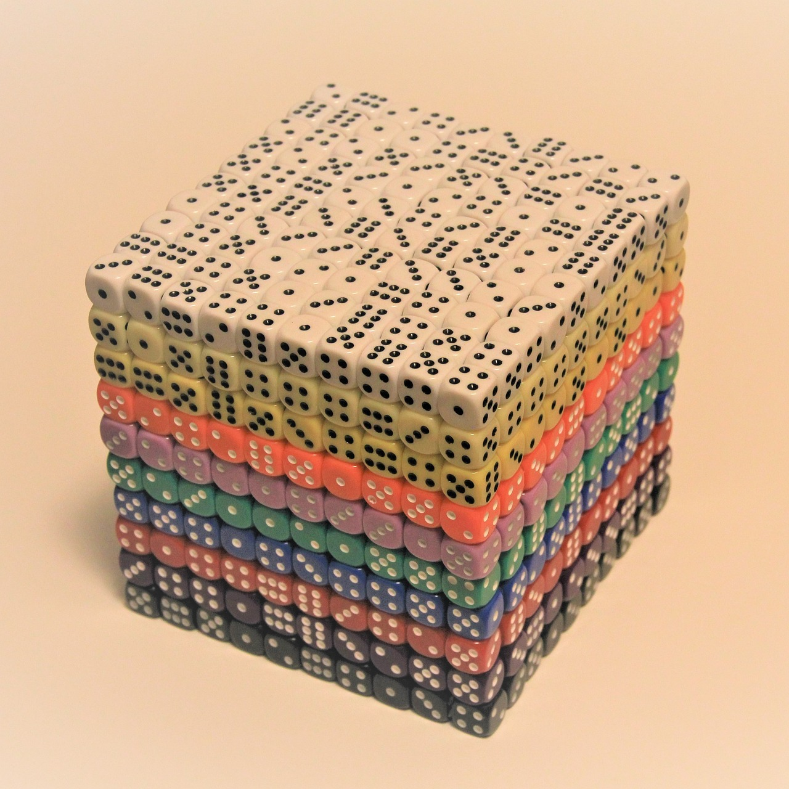

mindmap
root((Univariate
Random
Variable Y))
Continuous
{{Unbounded}}
)Normal(
)Logistic(
{{Nonnegative Y}}
)Lognormal(
)Exponential(
)Gamma(
)Weibull(
{{Y is between <br/>0 and 1}}
)Beta(
Discrete
Binary
{{Y is a success or <br/>failure}}
)Bernoulli(
Count
{{Y succeses in <br/>n trials}}
)Binomial(
{{Y failures <br/>before experiencing <br/>k successes}}
)Negative Binomial(
{{Y events in <br/>a fixed interval <br/>of time or space}}
)Classical <br/>Poisson(
)Generalized <br/>Poisson(
)Zero Inflated <br/>Poisson(
Categorical
{{Y successes of a given category, <br/>among a set of k categories, <br/>in n trials}}
)Multinomial(
Appendix C — The Chocolified Distributional Mind Map
Fun fact!
Chocolified! Every inch of it is chocolate, probably topped with more chocolate.
A crucial part of the practice of regression analysis is a fair knowledge of all the different probability distributions that would allow us to identify the most suitable regression model. Figure C.1 shows all those probability distributions depicted as clouds, in the form of a univariate random variable \(Y\), used in this book to model our outcomes of interest in the regression tools explored in each of the core thirteen chapters. Note this mind map splits the outcomes of interest into two large zones: discrete and continuous. Furthermore, this mind map briefly describes a given random variable \(Y\) as a quick cheat sheet regarding its support (e.g., nonnegative, bounded, unbounded, etc.) or distributional definition (e.g., success or failure, successes in \(n\) trials, etc.).
Since a given random variable (e.g., the outcome \(Y\) in any of the thirteen regression models in this book) will have a probability distribution associated with it, which will define the probability arrangement of each possible value or category \(Y\) could take on, we also need a way to summarize all this information via key estimated metrics called measures of central tendency and uncertainty:
- Measure of Central Tendency: This metric refers to a typical value or category that a given random variable might take when we observe various realizations of this variable over a long period.
- Measure of Uncertainty: This metric pertains to the spread of a random variable when we observe its different realizations in the long term. As a side note, a larger spread indicates more variability in these realizations.

These metrics allow us to clearly communicate how the outcome \(Y\) behaves in our case study, and this is heavily related to the storytelling stage from the data science workflow, as explained in Section 1.2.8. More specifically, the measures of central tendency can be communicated along with our estimated regression parameters, given that these metrics are usually conditioned to our regressors of interest within our modelling framework.
Heads-up on parameter estimation!
Just as in the case of regression parameters, the measures of central tendency and uncertainty are also parameters (more specifically, belonging to a given probability distribution) that can be estimated via an observed random sample through methods such as maximum likelihood estimation (MLE). You can check further details on the MLE fundamentals in Section 2.2.
There are different measures of central tendency and uncertainty. Nevertheless, we will only focus on the expected value (i.e., the mean) and the variance. Hence, let \(Y\) be a random variable and \(g(Y)\) be a general function of it. For the specific case of the mean of function \(g(Y)\), this measure of central tendency is mathematically defined as
\[ \mathbb{E} \left[ g(Y) \right] = \displaystyle \sum_y g(Y) \cdot P(Y = y), \tag{C.1}\]
where \(P(Y = y)\) is the probability mass function (PMF) of \(Y\).
On the other hand, if \(Y\) is a continuous random variable, the mean of function \(g(Y)\) is mathematically defined as
\[ \mathbb{E} \left[ g(Y) \right] = \displaystyle \int_y g(Y) \cdot f_Y(y) \text{d}y, \tag{C.2}\]
where \(P(Y = y)\) is the probability density function (PDF) of \(Y\).
Note that when \(g(Y) = y\) in the discrete case, Equation C.1 becomes
\[ \mathbb{E} \left[ Y \right] = \displaystyle \sum_y y \cdot P(Y = y). \tag{C.3}\]
On the other hand, when \(g(Y) = y\) in the continuous case, Equation C.2 becomes
\[ \mathbb{E} \left[ Y \right] = \displaystyle \int_y y \cdot f_Y(y) \text{d}y. \tag{C.4}\]
Either for a discrete or continuous case, the variance is defined as
\[ \text{Var}(Y) = \mathbb{E}\{[Y - \mathbb{E}(Y)]^2\}. \]
After some algebraic rearrangements and some expected value properties, the expression above is equivalent to:
\[ \begin{align*} \text{Var}(Y) &= \mathbb{E} \left\{ \left[ Y - \mathbb{E}(Y) \right]^2 \right\} \\ &= \mathbb{E} \left\{ Y^2 - 2Y \mathbb{E}(Y) + \left[ \mathbb{E}(Y) \right]^2 \right\} \\ &= \mathbb{E}(Y^2) - \mathbb{E} \left[ 2 Y \mathbb{E}(Y) \right] + \mathbb{E} \left[ \mathbb{E}(Y) \right]^2 \\ & \qquad \text{distributing the expected value operator}\\ &= \mathbb{E}(Y^2) - 2 \mathbb{E} \left[ Y \mathbb{E}(Y) \right] + \mathbb{E} \left[ \mathbb{E}(Y) \right]^2 \\ & \qquad \text{since $2$ is a constant}\\ &= \mathbb{E}(Y^2) - 2 \mathbb{E}(Y) \mathbb{E} \left( Y \right) + \left[ \mathbb{E}(Y) \right]^2 \\ & \qquad \text{since $\mathbb{E}(Y)$ is a constant}\\ &= \mathbb{E}(Y^2) - 2 \left[ \mathbb{E}(Y) \right]^2 + \left[ \mathbb{E}(Y) \right]^2 \\ &= \mathbb{E}(Y^2) - [\mathbb{E}(Y)]^2, \qquad \qquad \qquad \qquad \qquad \square \end{align*} \tag{C.5}\]
where \(\mathbb{E}(Y^2)\) can be computed either via Equation C.1 or Equation C.2 depending on the nature of \(Y\) with \(g(Y) = y^2\).
Now, for each case depicted as a cloud in Figure C.1, subsequent sections in this appendix will show elaborate on why each corresponding PMF or PDF (depending on the type of random variable, \(Y\)) is a proper probability distribution (i.e., all the standalone probabilities over the support of \(Y\) add up to one) along with the respective proofs of their corresponding means and variances.
D Discrete Random Variables
Let us recall what a discrete random variable is. This type of variable is defined to take on a set of countable values. In other words, these values belong to a finite set. Figure C.1 delves into the following specific probability distributions:
- Bernoulli. A random variable \(Y\) that can take on the values of \(0\) (i.e., a failure) or \(1\) (i.e., a success) where the distributional parameter is the probability of success \(\pi \in [0, 1]\). Note \(Y\) is said to be binary with a support of \(y \in \{ 0, 1 \}\).
- Binomial. A random variable \(Y\) that defines the number of independent Bernoulli trials in which we observe a success out of \(n\) trials. Its distributional parameters are the probability of success \(\pi \in [0, 1]\)of each Bernoulli trial along with the total number of trials \(n \in \mathbb{N}\). Note \(Y\) is said to be of count type with a support of \(y \in \{ 0, 1, \dots, n \}\) successes.
- Negative Binomial. A random variable \(Y\) that defines the number of independent Bernoulli trials in which we observe a failure before experiencing \(k\) successes. Its distributional parameters are the probability of success \(\pi \in [0, 1]\) of each Bernoulli trial along with the number of \(k \in \{ 0, 1, 2 \dots\}\) successes. Note \(Y\) is said to be of count type with a support of \(y \in \{ 0, 1, 2 \dots\}\) failures.
Table D.1 outlines the parameter(s), support, mean, and variance for each discrete probability distribution utilized to model the target \(Y\) in a specific regression tool explained in this book.
| Distribution | Parameter(s) | Support | Mean | Variance |
|---|---|---|---|---|
| Bernoulli | \(Y \sim \text{Bern}(\pi)\) with probability of success \(\pi \in [0, 1]\) | \(y \in \{ 0, 1 \}\) | \(\pi\) | \(\pi (1 - \pi)\) |
| Binomial | \(Y \sim \text{Bin}(n, \pi)\) with number of trials \(n \in \mathbb{N}\) and probability of success \(\pi \in [0, 1]\) | \(y \in \{ 0, 1, \dots, n \}\) | \(n \pi\) | \(n \pi (1 - \pi)\) |
| Negative Binomial | \(Y \sim \text{NegBin}(k, \pi)\) with number of successes \(k \in \{ 0, 1, 2 \dots\}\) and probability of success \(\pi \in [0, 1]\) | \(y \in \{ 0, 1, 2 \dots\}\) | \(\frac{k (1 - \pi)}{\pi}\) | \(\frac{k (1 - \pi)}{\pi^2}\) |
| Poisson | \(Y \sim \text{Pois}(\lambda)\) with continuous average rate \(\lambda \in (0, \infty)\) | \(y \in \{ 0, 1, 2 \dots\}\) | \(\lambda\) | \(\lambda\) |
D.1 Bernoulli
Let \(Y\) be a discrete random variable that is part of a random process or system. \(Y\) can only take on the following values:
\[ Y = \begin{cases} 1 \; \; \; \; \text{if there is a success},\\ 0 \; \; \; \; \mbox{otherwise}. \end{cases} \tag{D.1}\]
Note that the support of \(Y\) in Equation D.1 makes it binary with these outcomes: \(1\) for success and \(0\) for failure. Then, \(Y\) is said to have a Bernoulli distribution with parameter \(\pi\):
\[Y \sim \text{Bern}(\pi).\]
D.1.1 Probability Mass Function
The probability mass function (PMF) of \(Y\) is the following:
\[ P \left( Y = y \mid \pi \right) = \pi^y (1 - \pi)^{1 - y} \quad \text{for $y \in \{ 0, 1 \}$.} \tag{D.2}\]
Parameter \(\pi \in [0, 1]\) refers to the probability of success. We can verify Equation D.2 is a proper probability distribution (i.e., all the standalone probabilities over the support of \(Y\) add up to one) given that:
Proof. \[ \begin{align*} \sum_{y = 0}^1 P \left( Y = y \mid \pi \right) &= \sum_{y = 0}^1 \pi^y (1 - \pi)^{1 - y} \\ &= \underbrace{\pi^0}_{1} (1 - \pi) + \pi \underbrace{(1 - \pi)^{0}}_{1} \\ &= (1 - \pi) + \pi \\ &= 1. \qquad \qquad \qquad \qquad \quad \square \end{align*} \]
D.1.2 Expected Value
Via Equation C.3, the expected value or mean of a Bernoulli-distributed random variable \(Y\) can be found as follows:
Proof. \[ \begin{align*} \mathbb{E}(Y) &= \sum_{y = 0}^1 y P \left( Y = y \mid \pi \right) \\ &= \sum_{y = 0}^1 y \left[ \pi^y (1 - \pi)^{1 - y} \right] \\ &= \underbrace{(0) \left[ \pi^0 (1 - \pi) \right]}_{0} + (1) \left[ \pi (1 - \pi)^{0} \right] \\ &= 0 + \pi \\ &= \pi. \qquad \qquad \qquad \qquad \qquad \qquad \quad \square \end{align*} \]
D.1.3 Variance
Via Equation C.5 and the Equation C.3 of a discrete expected value, the variance of a Bernoulli-distributed random variable \(Y\) can be found as follows:
Proof. \[ \begin{align*} \text{Var} (Y) &= \mathbb{E}(Y^2) - \left[ \mathbb{E}(Y)\right]^2 \\ &= \mathbb{E}(Y^2) - \pi^2 \qquad \text{since $\mathbb{E}(Y) = \pi$} \\ &= \sum_{y = 0}^1 y^2 P \left( Y = y \mid \pi \right) - \pi^2 \\ &= \left\{ \underbrace{(0^2) \left[ \pi^0 (1 - \pi) \right]}_{0} + \underbrace{(1^2) \left[ \pi (1 - \pi)^{0} \right]}_{\pi} \right\} - \pi^2 \\ &= (0 + \pi) - \pi^2 \\ &= \pi - \pi^2 \\ &= \pi (1 - \pi). \qquad \qquad \qquad \qquad \qquad \qquad \qquad \quad \square \end{align*} \]
D.2 Binomial
Suppose you execute \(n\) independent Bernoulli trials, each one with a probability of success \(\pi\). Let \(Y\) be the number of successes obtained within these \(n\) Bernoulli trials. Then, \(Y\) is said to have a Binomial distribution with parameters \(n\) and \(\pi\):
\[Y \sim \text{Bin}(n, \pi).\]
D.2.1 Probability Mass Function
The PMF of \(Y\) is the following:
\[ \begin{align*} P \left( Y = y \mid n, \pi \right) &= {n \choose y} \pi^y (1 - \pi)^{n - y} \\ & \qquad \qquad \qquad \text{for $y \in \{ 0, 1, \dots, n \}$.} \end{align*} \tag{D.3}\]
Parameters \(\pi \in [0, 1]\) and \(n \in \mathbb{N}\) refer to the probability of success and number of trials, respectively. On the other hand, the term \({n \choose y}\) indicates the total number of possible combinations for \(y\) successes out of our \(n\) trials:
\[ {n \choose y} = \frac{n!}{y!(n - y)!}. \tag{D.4}\]
How can we verify that Equation D.3 is a proper PMF (i.e., all the standalone probabilities over the support of \(Y\) add up to one)?
To elaborate on this, we need to use a handy mathematical result called the binomial theorem.
Theorem D.1 (Binomial Theorem) This theorem is associated to the Pascal’s identity, and it defines the pattern of coefficients in the expansion of a polynomial in the form \((u + v)^m\). More specifically, the binomial theorem indicates that if \(m\) is a non-negative integer, then the polynomial \((u + v)^m\) can be expanded via the following series:
\[ \begin{align*} (u + v)^m &= u^m + {m \choose 1} u^{m - 1} v + {m \choose 2} u^{m - 2} v^2 + \dots + \\ & \qquad {m \choose r} u^{m - r} v^r + \dots + \\ & \qquad {m \choose m - 1} u v^{m - 1} + v^m \\ &= \underbrace{{m \choose 0}}_1 u^m + {m \choose 1} u^{m - 1} v + {m \choose 2} u^{m - 2} v^2 + \dots + \\ & \qquad {m \choose r} u^{m - r} v^r + \dots + \\ & \qquad {m \choose m - 1} u v^{m - 1} + \underbrace{{m \choose m}}_1 v^m \\ &= \sum_{i = 0}^m {m \choose i} u^{m - i} v^i. \end{align*} \tag{D.5}\]
Tip on the binomial theorem and Pascal’s identity
Let us dig into the proof of the binomial theorem from Equation D.5. This proof will require another important result called the Pascal’s identity. This identity states that for any integers \(m\) and \(k\), with \(k \in \{ 1, \dots, m \}\), it follows that:
Proof. \[ \begin{align*} {m \choose k - 1} + {m \choose k} &= \left[ \frac{m!}{(k - 1)! (m - k + 1)!} \right] \\ & \qquad + \left[ \frac{m!}{k! (m - k)!} \right] \\ &= m! \biggl\{ \left[ \frac{1}{(k - 1)! (m - k + 1)!} \right] + \\ & \qquad \left[ \frac{1}{k! (m - k)!} \right] \biggl\} \\ &= m! \Biggl\{ \Biggr[ \frac{k}{\underbrace{k (k - 1)!}_{k!} (m - k + 1)!} \Biggr] + \\ & \qquad \Biggr[ \frac{m - k + 1}{k! \underbrace{(m - k + 1)(m - k)!}_{(m - k + 1)!}} \Biggr] \Biggl\} \\ &= m! \left[ \frac{k + m - k + 1}{k! (m - k + 1)!} \right] \\ &= m! \left[ \frac{m + 1}{k! (m - k + 1)!} \right] \\ &= \frac{(m + 1)!}{k! (m + 1 - k)!} \\ &= {m + 1 \choose k }. \qquad \qquad \qquad \qquad \square \end{align*} \tag{D.6}\]
Now, we will use mathematical induction to prove the binomial theorem from Equation D.5. Firstly, on the left-hand side of the theorem, note that when \(m = 0\) we have:
\[ (u + v)^0 = 1. \]
Now, when \(m = 0\), for the right-hand side of this equation, we have that
\[ \sum_{i = 0}^m {m \choose i} u^{m - i} v^i = \sum_{i = 0}^0 {0 \choose i} u^i v^{i} = {0 \choose 0} u^0 v^0 = 1. \]
Hence, the binomial theorem holds when \(m = 0\). This is what we call the base case in mathematical induction.
That said, let us proceed with the inductive hypothesis. We aim to prove that the binomial theorem
\[ \begin{align*} (u + v)^j &= u^j + {j \choose 1} u^{j - 1} v + {j \choose 2} u^{j - 2} v^2 + \dots + \\ & \qquad {j \choose r} u^{j - r} v^r + \dots + \\ & \qquad {j \choose j - 1} u v^{j - 1} + v^j \\ &= \underbrace{{j \choose 0}}_1 u^j + {j \choose 1} u^{j - 1} v + {j \choose 2} u^{j - 2} v^2 + \dots + \\ & \qquad {j \choose r} u^{j - r} v^r + \dots + \\ & \qquad {j \choose j - 1} u v^{j - 1} + \underbrace{{j \choose j}}_1 v^j \\ &= \sum_{i = 0}^j {j \choose i} u^{j - i} v^i \end{align*} \tag{D.7}\]
holds when integer \(j \geq 1\). This is our inductive hypothesis.
Then, we pave the way to the inductive step. Let us consider the following expansion:
\[ \begin{align*} (u + v)^{j + 1} &= (u + v) (u + v)^j \\ &= (u + v) \times \\ & \qquad \bigg[ u^j + {j \choose 1} u^{j - 1} v + {j \choose 2} u^{j - 2} v^2 + \dots + \\ & \qquad {j \choose r} u^{j - r} v^r + \dots + {j \choose j - 1} u v^{j - 1} + v^j \bigg] \\ &= \bigg[u^{j + 1} + {j \choose 1} u^j v + {j \choose 2} u^{j - 1} v^2 + \dots + \\ & \qquad {j \choose r} u^{j - r + 1} v^r + \dots + \\ & \qquad {j \choose j - 1} u^2 v^{j - 1} + u v^j \bigg] + \\ & \qquad \bigg[ u^j v + {j \choose 1} u^{j - 1} v^2 + {j \choose 2} u^{j - 2} v^3 + \dots + \\ & \qquad {j \choose r} u^{j - r} v^{r + 1} + \dots + \\ & \qquad {j \choose j - 1} u v^j + {j \choose j} v^{j + 1} \bigg] \\ &= u^{j + 1} + \left[ {j \choose 0} + {j \choose 1} \right] u^j v + \\ & \qquad \left[ {j \choose 1} + {j \choose 2} \right] u^{j - 1} v^2 + \dots + \\ & \qquad \left[ {j \choose r - 1} + {j \choose r} \right] u^{j - r + 1} v^r + \dots + \\ & \qquad \left[ {j \choose j - 1} + {j \choose j} \right] u v^j + v^{j + 1}. \end{align*} \tag{D.8}\]
Let us plug in the Pascal’s identity from Equation D.6 into Equation D.8:
\[ \begin{align*} (u + v)^{j + 1} &= u^{j + 1} + {j + 1 \choose 1} u^j v + \\ & \qquad {j + 1 \choose 2} u^{j - 1} v^2 + \dots + \\ & \qquad {j + 1 \choose r} u^{j - r + 1} v^r + \dots + \\ & \qquad {j + 1 \choose j} u v^j + v^{j + 1} \\ &= \underbrace{{j + 1 \choose 0}}_1 u^{j + 1} + {j + 1 \choose 1} u^j v + \\ & \qquad {j + 1 \choose 2} u^{j - 1} v^2 + \dots + \\ & \qquad {j + 1 \choose r} u^{j - r + 1} v^r + \dots + \\ & \qquad {j + 1 \choose j} u v^j + \underbrace{{j + 1 \choose j + 1}}_1 v^{j + 1} \\ &= \sum_{i = 0}^{j + 1} {j + 1 \choose i} u^{j + 1 - i} v^i. \qquad \quad \square \end{align*} \tag{D.9}\]
Note that the result for \(j\) in Equation D.7 also holds for \(j + 1\) in Equation D.9. Therefore, by induction, the binomial theorem from Equation D.5 is true for all positive integers \(m\).
After the above fruitful digression on the binomial theorem, let us use it to show that our Binomial PMF in Equation D.3 actually adds up to one all over the support of the random variable:
Proof. \[ \begin{align*} \sum_{y = 0}^n P \left( Y = y \mid n, \pi \right) &= \sum_{y = 0}^n {n \choose y} \pi^y (1 - \pi)^{n - y} \\ &= \sum_{y = 0}^n {n \choose y} (1 - \pi)^{n - y} \pi^y \\ & \quad \qquad \text{rearranging factors.} \end{align*} \]
Now, by using the binomial theorem in Equation D.5, let:
\[ \begin{gather*} m = n\\ i = y \\ u = 1 - \pi \\ v = \pi. \end{gather*} \]
The above arrangement yields the following result:
\[ \begin{align*} \sum_{y = 0}^n P \left( Y = y \mid n, \pi \right) &= (1 - \pi + \pi)^n \\ &= 1^n = 1. \qquad \square \end{align*} \tag{D.10}\]
Indeed, the Binomial PMF is a proper probability distribution!
D.2.2 Expected Value
Via Equation C.3, the expected value or mean of a Binomial-distributed random variable \(Y\) can be found as follows:
Proof. \[ \begin{align*} \mathbb{E}(Y) &= \sum_{y = 0}^n y P \left( Y = y \mid n, \pi \right) \\ &= \sum_{y = 1}^n y P \left( Y = y \mid n, \pi \right) \\ & \quad \qquad \text{for $y = 0$, the addend is equal to zero} \\ &= \sum_{y = 1}^n y \left[ {n \choose y} \pi^y (1 - \pi)^{n - y} \right] \\ &= \sum_{y = 1}^n y \left[ \frac{n!}{y! (n - y)!} \pi^y (1 - \pi)^{n - y} \right] \\ &= \sum_{y = 1}^n \left[ \frac{y n!}{y (y - 1)!(n - y)!} \pi^y (1 - \pi)^{n - y} \right] \\ & \quad \qquad \text{in the denominator, $y! = y (y - 1)!$}\\ &= \sum_{y = 1}^n \left[ \frac{n (n - 1)!}{(y - 1)!(n - y)!} \pi^y (1 - \pi)^{n - y} \right] \\ & \quad \qquad \text{in the numerator, $n! = n (n - 1)!$} \\ &= \sum_{y = 1}^n \left[ \frac{n (n - 1)!}{(y - 1)!(n - y)!} \pi^{y + 1 - 1} (1 - \pi)^{n - y} \right] \\ & \quad \qquad \text{note $\pi^y = \pi^{y + 1 - 1}$} \\ &= n \sum_{y = 1}^n \left[ \frac{(n - 1)!}{(y - 1)!(n - y)!} \pi \pi^{y - 1} (1 - \pi)^{n - y} \right] \\ & \quad \qquad \text{rearranging terms} \\ &= n \pi \sum_{y = 1}^n \left[ \frac{(n - 1)!}{(y - 1)!(n - y)!} \pi^{y - 1} (1 - \pi)^{n - y} \right] \end{align*} \tag{D.11}\]
Now, let us make the following variable rearrangement:
\[ \begin{gather*} m = n - 1 \\ z = y - 1 \\ m - z = n - y. \end{gather*} \]
Going back to Equation D.11, and applying our above variable rearrangement within the summation, we have:
\[ \begin{align*} \mathbb{E}(Y) &= n \pi \sum_{z = 0}^m \left[ \frac{m!}{z!(m - z)!} \pi^{z} (1 - \pi)^{m - z} \right] \\ &= n \pi \sum_{z = 0}^m \left[ {m \choose z}\pi^{z} (1 - \pi)^{m - z} \right] \end{align*} \tag{D.12}\]
Note that, in the summation of Equation D.12, we encounter the PMF of a random variable \(Z\) as follows:
\[ Z \sim \text{Bin}(m, \pi). \]
Since the summation, where this Binomial PMF of \(Z\) is depicted, goes from \(z = 0\) to \(m\), we can apply our result from Equation D.10:
\[ \begin{align*} \mathbb{E}(Y) &= n \pi \underbrace{\sum_{z = 0}^m \left[ {m \choose z}\pi^{z} (1 - \pi)^{m - z} \right]}_{1} \\ & \quad \qquad \text{the summation adds up to 1} \\ &= n \pi. \qquad \qquad \qquad \qquad \qquad \qquad \quad \square \end{align*} \]
D.2.3 Variance
Via Equation C.5 and the Equation C.3 of a discrete expected value, the variance of a Binomial-distributed random variable \(Y\) can be found as follows:
Proof. \[ \begin{align*} \text{Var} (Y) &= \mathbb{E}(Y^2) - \left[ \mathbb{E}(Y)\right]^2 \\ &= \mathbb{E}(Y^2) - (n \pi)^2 \qquad \text{since $\mathbb{E}(Y) = n \pi$.} \end{align*} \tag{D.13}\]
Unlike the Bernoulli random variable, finding \(\mathbb{E}(Y^2)\) is not quite straightforward. We need to play around with its expected value expression as follows:
\[ \begin{align*} \mathbb{E}(Y^2) &= \mathbb{E} \left[ Y (Y - 1) \right] + \mathbb{E}(Y) \\ &= \mathbb{E} \left[ Y (Y - 1) \right] + n \pi \qquad \text{since $\mathbb{E}(Y) = n \pi$.} \end{align*} \tag{D.14}\]
Now, to find \(\mathbb{E} \left[ Y (Y - 1) \right]\), we make the following derivation via Equation C.1 when \(g(Y) = y (y - 1)\):
\[ \begin{align*} \mathbb{E} \left[ Y (Y - 1) \right] &= \sum_{y = 0}^n y (y - 1) P \left( Y = y \mid n, \pi \right) \\ &= \sum_{y = 2}^n y (y - 1) P \left( Y = y \mid n, \pi \right) \\ & \quad \qquad \text{for $y = 0, 1$; the addends are equal to zero} \\ &= \sum_{y = 2}^n y (y - 1) \left[ {n \choose y} \pi^y (1 - \pi)^{n - y} \right] \\ &= \sum_{y = 2}^n y (y - 1) \left[ \frac{n!}{y! (n - y)!} \pi^y (1 - \pi)^{n - y} \right] \\ &= \sum_{y = 2}^n \left[ \frac{y (y - 1) n!}{y (y - 1) (y - 2)! (n - y)!} \pi^y (1 - \pi)^{n - y} \right] \\ & \quad \qquad \text{in the denominator, $y! = y (y - 1) (y - 2)!$} \\ &= \sum_{y = 2}^n \left[ \frac{n (n - 1) (n - 2)!}{(y - 2)! (n - y)!} \pi^y (1 - \pi)^{n - y} \right] \\ & \quad \qquad \text{in the numerator, $n! = n (n - 1) (n - 2)!$} \\ &= \sum_{y = 2}^n \left[ \frac{n (n - 1) (n - 2)!}{(y - 2)! (n - y)!} \pi^{y + 2 - 2} (1 - \pi)^{n - y} \right] \\ & \quad \qquad \text{note $\pi^y = \pi^{y + 2 - 2}$} \\ &= n (n - 1) \times \\ & \qquad \sum_{y = 2}^n \left[ \frac{(n - 2)!}{(y - 2)! (n - y)!} \pi^2 \pi^{y - 2} (1 - \pi)^{n - y} \right] \\ & \qquad \qquad \text{rearranging terms} \\ &= n (n - 1) \pi^2 \times \\ & \qquad \sum_{y = 2}^n \left[ \frac{(n - 2)!}{(y - 2)! (n - y)!} \pi^{y - 2} (1 - \pi)^{n - y} \right] \\ & \qquad \qquad \text{rearranging terms} \end{align*} \tag{D.15}\]
Then, we make the following variable rearrangement:
\[ \begin{gather*} m = n - 2 \\ z = y - 2 \\ m - z = n - y. \end{gather*} \]
Going back to Equation D.15, and applying our above variable rearrangement within the summation, we have:
\[ \begin{align*} \mathbb{E} \left[ Y (Y - 1) \right] &= n (n - 1) \pi^2 \sum_{z = 0}^m \left[ \frac{m!}{z! (m - z)!} \pi^{z} (1 - \pi)^{m - z} \right]. \end{align*} \tag{D.16}\]
Note that, in the summation of Equation D.16, we encounter the PMF of a random variable \(Z\) as follows:
\[ Z \sim \text{Bin}(m, \pi). \]
Since the summation, where this Binomial PMF of \(Z\) is depicted, goes from \(z = 0\) to \(m,\) we can apply our result from Equation D.10:
\[ \begin{align*} \mathbb{E} \left[ Y (Y - 1) \right] &= n (n - 1) \pi^2 \underbrace{\sum_{z = 0}^m \left[ \frac{m!}{z! (m - z)!} \pi^{z} (1 - \pi)^{m - z} \right]}_{1} \\ & \qquad \qquad \qquad \quad \text{the summation adds up to 1} \\ &= n (n - 1) \pi^2. \end{align*} \]
Let us go back to Equation D.14 and plug in the above result:
\[ \begin{align*} \mathbb{E}(Y^2) &= \mathbb{E} \left[ Y (Y - 1) \right] + n \pi \\ &= n (n - 1) \pi^2 + n \pi. \\ \end{align*} \]
Finally, we plug in \(\mathbb{E}(Y^2)\) in Equation D.13:
\[ \begin{align*} \text{Var} (Y) &= \mathbb{E}(Y^2) - (n \pi)^2 \\ &= n (n - 1) \pi^2 + n \pi - n^2 \pi^2 \\ &= n^2 \pi^2 - n \pi^2 + n \pi - n^2 \pi^2 \\ &= n \pi - n \pi^2 \\ &= n \pi (1 - \pi). \qquad \qquad \qquad \square \end{align*} \]
D.3 Negative Binomial
Suppose you execute a series of independent Bernoulli trials, each one with a probability of success \(\pi\). Let \(Y\) be the number of failures in this series of Bernoulli trials you obtain before experiencing \(k\) successes. Therefore, \(Y\) is said to have a Negative Binomial distribution with parameters \(k\) and \(\pi\):
D.4 Classical Poisson
D.5 Generalized Poisson
D.6 Zero-inflated Poisson
E Continuous Random Variables
| Distribution | Parameter(s) | Support | Mean | Variance |
|---|---|---|---|---|
| Exponential |
\(Y \sim \text{Exponential}(\lambda)\) with mean rate \(\lambda >0\) or \(Y \sim \text{Exponential}(\beta)\) with mean wait time \(\beta > 0\) |
\(y \geq 0\) |
\(\frac{1}{\lambda}\) for mean rate parametrization or \(\beta\) for mean wait time parametrization |
\(\frac{1}{\lambda^2}\) for mean rate parametrization or \(\beta^2\) for mean wait time parametrization |